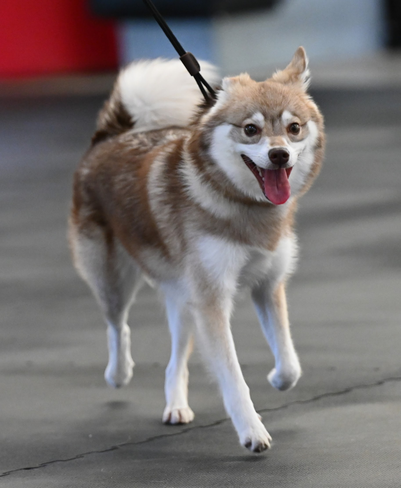

My Dogs and their breeds
Breed search
Random breed, picture, fact
My dogs - Alaskan Klee Kai
Asta
Asta is an Alaskan Klee Kai.

Alaskan Klee Kai
The Alaskan Klee Kai is a new breed, created starting in the 1970s to be a miniature version of the larger arctic breeds. Breeds that helped create the Alaskan Klee Kai: